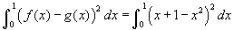
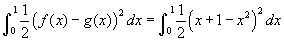
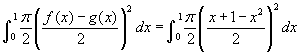
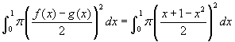
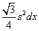
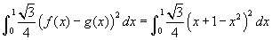
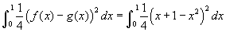
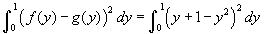

This device cannot display Java animations. The above is a substitute static image
1. Square on side
The applet initially shows the yellow region bounded by f (x) = x +1 and g(x) = x² from 0 to 1. This is the base of a solid which has square cross sections when sliced perpendicular to the x-axis (i.e., one side of each square lies in the yellow region). Move the x slider to move a representative slice about the region, noticing that the size of the square changes. The two ends are also shown in light gray.
Note that the slice is sticking up from the screen, and the perspective causes it to look like a rectangle. The volume of one of these square slices with thickness dx and side length s is just the area of the square times dx, or s²dx. But s is just the distance between the two curves for a given x, or s = x +1 - x². So the integral which sums up all these slices is just

We will leave it as an exercise for the reader to show that this is 41/30 or about 1.367.
2. Square on diagonal
Select the second example from the drop down menu, showing the same region. This time the cross sections (when sliced perpendicular to the x-axis) are also squares, but the diagonal of the square lies on the region. This means that the square sticks up out of the screen and also down below the screen. Move the x slider to move a representative slice about the region, noticing that the size of the square changes. The volume of one of these square slices with thickness dx and diagonal length d is just the area of the square times dx, or d²/2dx. But d is just the distance between the two curves for a given x, or d = x +1 - x². So the integral which sums up all these slices is just

We will leave it as an exercise for the reader to show that this is 41/60 or about 0.683.
3. Semicircle
Select the third example from the drop down menu. This time the cross sections (when sliced perpendicular to the x-axis) are semicircles with the diameter lying on the yellow region. This means that the slice sticks up out of the screen. Move the x slider to move a representative slice about the region, noticing that the size of the slice changes.
The volume of one of these slices with thickness dx and diameter length d is just the area of the semicircle times dx, or π(d/2)²/2dx. But d is just the distance between the two curves for a given x, or d = x +1 - x². So the integral which sums up all these slices is just

We will leave it as an exercise for the reader to show that this is 41π/240 or about 0.537.
4. Circle
Select the fourth example from the drop down menu. This time the cross sections (when sliced perpendicular to the x-axis) are circles with the diameter lying on the yellow region. This means that the slice sticks up out of the screen and down below the screen. Move the x slider to move a representative slice about the region, noticing that the size of the slice changes. The volume of one of these slices with thickness dx and diameter length d is just the area of the circle times dx, or π(d/2)²dx. But d is just the distance between the two curves for a given x, or d = x +1 - x². So the integral which sums up all these slices is just

We will leave it as an exercise for the reader to show that this is 41π/120 or about 1.073. Note that this is a different solid than one generated by revolution about an axis; in this case there is no straight-line axis.
5. Equilateral triangle
Select the fifth example from the drop down menu. This time the cross sections (when sliced perpendicular to the x-axis) are equilateral triangles with one side lying on the yellow region. This means that the slice sticks up out of the screen. Move the x slider to move a representative slice about the region, noticing that the size of the slice changes. The volume of one of these slices with thickness dx and side length s is just the area of the triangle times dx, or

But
s is just the distance between the two curves for a given
x, or
s =
x +1 -
x². So the integral which sums up all these slices is just

We will leave it as an exercise for the reader to show that this is 41√3/120 or about 0.592.
6. Right isosceles triangle on hypotenuse
Select the sixth example from the drop down menu. This time the cross sections (when sliced perpendicular to the x-axis) are right isosceles triangles with the hypotenuse lying on the yellow region. This means that the right angle corner sticks up out of the screen. Move the x slider to move a representative slice about the region, noticing that the size of the slice changes. The volume of one of these slices with thickness dx and hypotenuse length h is just the area of the triangle times dx, or h²/4dx. But h is just the distance between the two curves for a given x, or h = x +1 - x². So the integral which sums up all these slices is just

We will leave it as an exercise for the reader to show that this is 41/120 or about 0.342.
7. Right isosceles triangle on leg
Select the seventh example from the drop down menu. This time the cross sections (when sliced perpendicular to the x-axis) are right isosceles triangles with one leg lying on the yellow region. This means that the other leg and hypotenuse stick up out of the screen. Move the x slider to move a representative slice about the region, noticing that the size of the slice changes. The volume of one of these slices with thickness dx and leg length l is just the area of the triangle times dx, or l²/2dx. But l is just the distance between the two curves for a given x, or l = x +1 - x². So the integral which sums up all these slices is just
 We will leave it as an exercise for the reader to show that this is 41/60 or about 0.683.
We will leave it as an exercise for the reader to show that this is 41/60 or about 0.683.
8. Square. Slices horizontal
Select the eighth example. Here the functions are functions of y instead of x and the slices are taken perpendicular to the y axis. Initially the cross section is a square. Move the y slider to move a representative slice about the region, noticing that the size of the square changes. The integral which sums up all these slices is just

As you would expect (since the region is the same as example 1, just with
x and
y flipped), the area is the same as in example 1. You can use the choice box to select other cross section shapes.
Explore
Select the ninth example. This lets you enter your own functions, limits of integration, cross section type, and whether x and y are swapped (remember to define your functions with y if you click the inverse box).
Other 'Applications of Integration' topics
(C) 2011 Copyright Math Open Reference.
All rights reserved